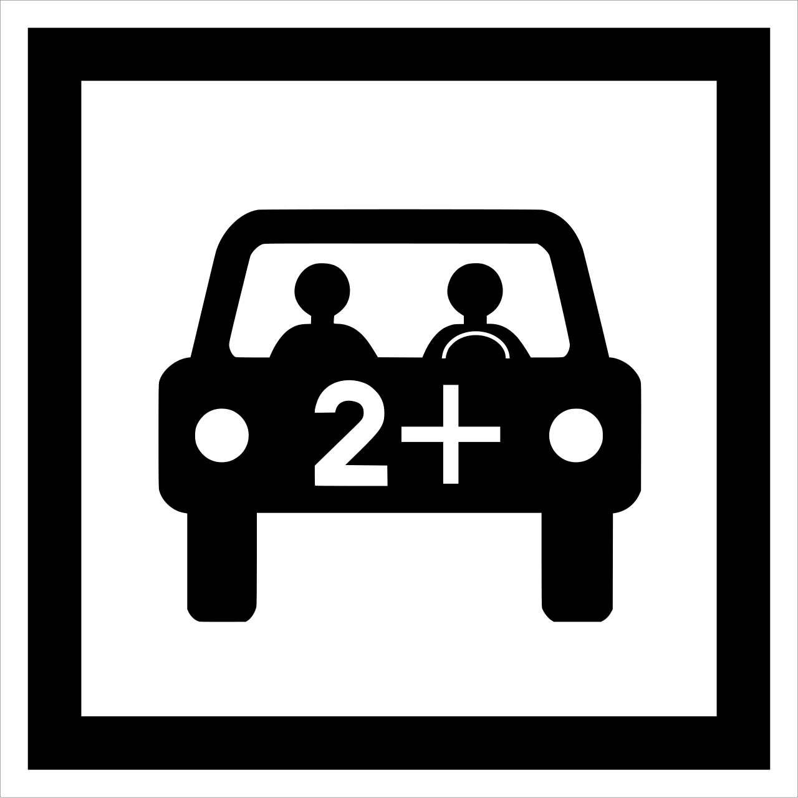

BlablaCar... Derrière ce nom se cache une histoire qui débute par une idée simple, née d'une situation du quotidien.
Tout commence en Décembre 2003. Frédéric Mazzella souhaite rentrer en Vendée pour les fêtes de Noël. Malheureusement, il ne trouve pas de train qui puisse l'emmener. Sa sœur décide de venir le chercher. En chemin, il remarque que de nombreuses voitures circulent avec des places libres. Il a alors l’idée de créer un réseau permettant de partager ces places libres.

En 2006, l’idée commence à prendre forme avec la création de Comuto. Comuto est l’entreprise créée par Frédéric Mazzella pour développer son projet de covoiturage. Le site Covoiturage.fr est alors relancé afin de permettre aux conducteurs de proposer leurs places libres et aux passagers de trouver un trajet correspondant à leurs besoins. Le projet devient alors un véritable service numérique, permettant de mettre en relation les utilisateurs directement en ligne. Il commence progressivement à attirer de nouveaux membres.
En 2008, le service commence à prendre de l’ampleur. De plus en plus de personnes utilisent la plateforme, qui compte déjà environ 70 000 membres. Pour répondre à cette croissance, l’équipe travaille sur l’amélioration du site et prend en compte les retours des utilisateurs. La plateforme devient ainsi progressivement plus adaptée aux besoins des conducteurs et des passagers.
Entre 2011 et 2015, BlaBlaCar franchit une nouvelle étape. Après s’être développé en France, le service commence à s’étendre dans plusieurs pays européens, puis poursuit son expansion à l’international. BlaBlaCar est alors présent dans de nombreux pays et rassemble plusieurs millions d’utilisateurs. L’entreprise devient ainsi une plateforme internationale de covoiturage.
En 2018 et 2019, BlaBlaCar élargit son activité. L’entreprise développe le covoiturage du quotidien, notamment pour les trajets domicile-travail, puis intègre le transport en bus avec l’acquisition de Ouibus. Cette évolution permet à BlaBlaCar de diversifier son offre et de proposer plusieurs solutions de mobilité.**
Aujourd’hui, BlaBlaCar est devenu un acteur international de la mobilité. La plateforme réunit désormais le covoiturage, le bus et le train au sein d’un même service. Elle se distingue ainsi de ses concurrents par la diversité de son offre et s’impose comme un leader incontourable du covoiturage en France et dans d'autres endroits du monde.